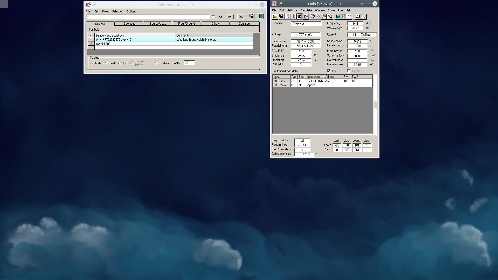
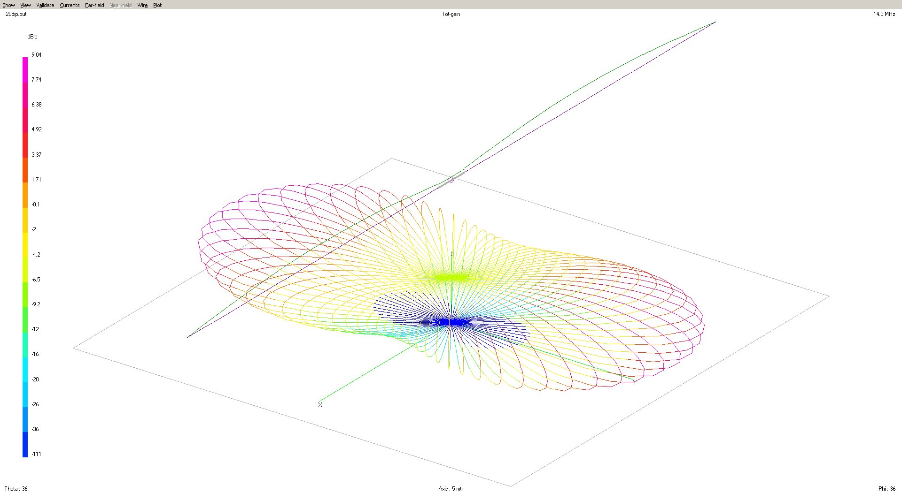
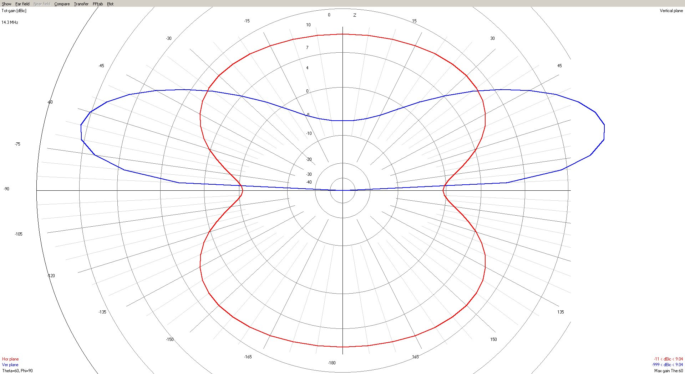
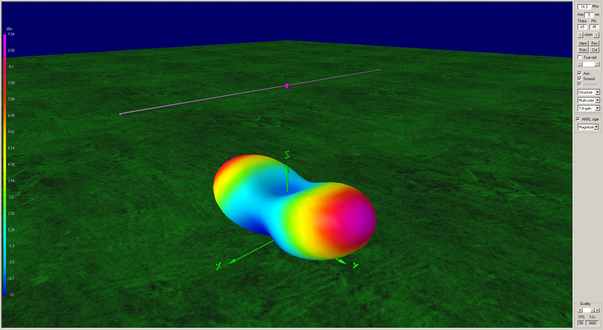

Description
Introduction
The purpose of this section is to demonstrate simulation of antennas using the 4NEC2 software package. As a first run, I will simulate a 20 meter dipole antenna excited at 14.300 MHz.
Simulation Setup

Discussion:
An diople antenna example file was used and modified for the 20 meters case. The original example file was constructed for the 80 meter case. It was a simple matter to modify the length parameters for 20 meters. The rough approximation of 468/fMHz in feet was used to calculate the length of the antenna for 20 meters, and then the result was converted into meters. A height of 10 meters was chosen as a practical example.
Simulation Run - Dipole Geometry and Radiation Pattern View

The dipole antenna is seen from above and at an angle. The current distribution is also shown, and it can be seen that the current is maximum at half-way between the central feedpoint and the wire end. The radiation pattern is "broadside", with about 7.75 dBc (decibels relative to a carrier) gain at a 40 degree angle relative to the ground. This is beneficial for launching sky waves for medium range to DX range, but not very good for communicating to nearby stations. A NVIS (Near Vertical Incident Skywave) antenna setup would be more ideal for that.
Simulation Run - Radiation Pattern Polar Plot View

The blue plot is looking at the antenna end on, and therefore, the radiation pattern is broadside. The red line is looking at the antenna from a top view.
Simulation Run - Radiation Pattern 3D Colorized Plot View

In this view, the dipole antenna is shown together with its radiation pattern.